Program GSAS [68], the general structure analysis
system package, was used to carry out Rietveld analysis of Bragg peaks
in reciprocal space. The Q range used is from 1.0 to 12.5
Å-1. Only the two highest angle banks are refined. Initial structure
models are the same as the aforementioned PDFFIT refinements, i.e. Pbnm and
R c. For both NPDF and SEPD data sets, the
lowest temperature data were first refined. Instrument and sample
dependent parameters, such as diffractometer zero constants and peak
profiles, are only refined at this initial step. Then, in the order of
low to high temperatures, starting from the refined parameters of
previous temperature, the following are refined: lattice constants,
non special atomic fractional coordinates, and isotropic thermal
displacement factors. Background for each bank is approximated by a
shifted Chebyschev polynomial with 7-12 terms (type 1 in program
GSAS). Along the way, addition of the second phase or the change of
space group was necessary near phase transition temperatures. Rather
satisfactory agreements were achieved at all temperatures with
c. For both NPDF and SEPD data sets, the
lowest temperature data were first refined. Instrument and sample
dependent parameters, such as diffractometer zero constants and peak
profiles, are only refined at this initial step. Then, in the order of
low to high temperatures, starting from the refined parameters of
previous temperature, the following are refined: lattice constants,
non special atomic fractional coordinates, and isotropic thermal
displacement factors. Background for each bank is approximated by a
shifted Chebyschev polynomial with 7-12 terms (type 1 in program
GSAS). Along the way, addition of the second phase or the change of
space group was necessary near phase transition temperatures. Rather
satisfactory agreements were achieved at all temperatures with 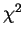
ranging from 2.0 to 5.0. Examples of Rietveld analysis are shown in
Fig. 3.15 and 3.16 for
sample LaMnO3(A) and (B), respectively.
Figure:
(upleft) The Rietveld refinement plot of bank 5 of 650 K
LaMnO3(A) data, (upright) 730 K, (downleft) 880 K, (downright)
1150 K. The annotations are: experimental observed intensities are
shown as crosses (×); calculated pattern from crystallographic
model is shown as solid line; their difference is shown offset
below; Bragg peak positions are indicated by the short vertical
bars.
|
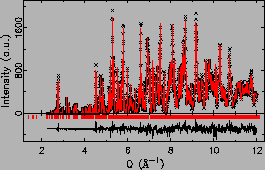
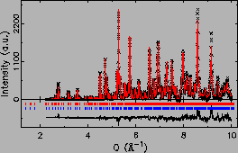
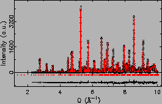
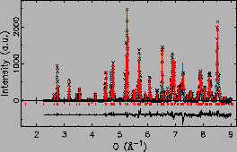
|
Figure:
(upleft) The Rietveld refinement plot of bank 5 of 20 K
LaMnO3(B) data, (upright) 300 K, (downleft) 603 K, (downright)
805 K. The annotations are: experimental observed intensities are
shown as crosses (×); calculated pattern from
crystallographic model is shown as solid line; their difference is
shown offset below; Bragg peak positions are indicated by the
short vertical bars.
|
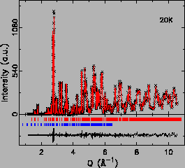
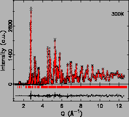
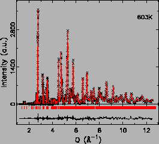
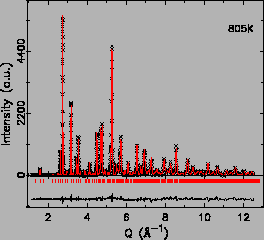 |
The sample LaMnO3(A) after the high T measurement was also measured at
300 K at a later time in displex, to check whether the sample
stoichiometry has changed during the high temperature
measurement. Rietveld refinements were carried out on both 300 K data
sets, and shown in Fig. 3.17.
Figure:
Comparison of the neutron powder diffraction pattern of
sample LaMnO3(A) between the beginning and end of the
experiment. (left) Rietveld refinement of 300 K data before the high
T measurement, (right) 300 K data after the high T measurement.
|
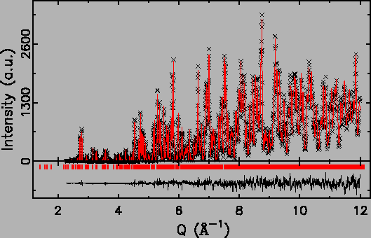
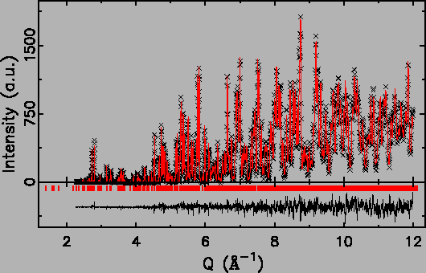
|
Between these two measurements, the crystal structures are identical,
and the only different parameters are scale factors and scattering
background. Both refinements have rather small values, 2.46
(before), 1.87 (after). Also in consideration that the measurement was
all carried out in vacuum, we reached the conclusion that the sample
stoichiometry had not changed during our experiment.
Xiangyun Qiu
2005-02-18